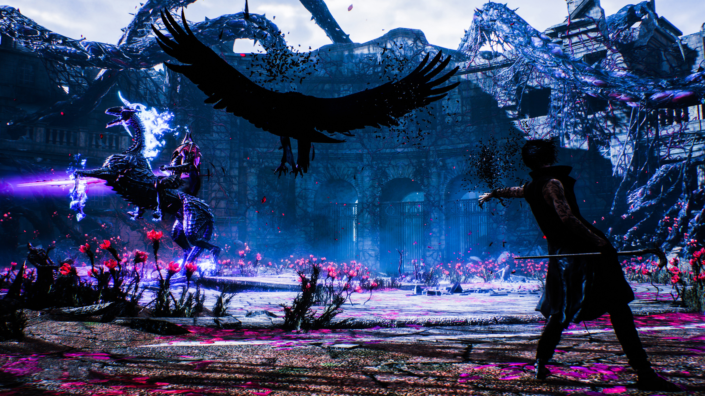

Devil May Cry: Uma introdução a franquia
A História
Dona de um dos títulos mais aclamados do PS2 (Devil May Cry 3) e sendo umas maiores franquias da Capcom, Devil May Cry conta a história do caçador de demônios: Dante, filho do lendário demônio Sparda (responsável por selar a barreira entre o mundo humano e demoníaco) e de uma humana chamada Eva. Dante tenta salvar o mundo dos demônios, ao contrário de seu irmão Vergil que é obcecado pelo poder e abraçou seu lado demoníaco.
Por onde começar
Num geral, qualquer jogo da franquia pode ser o primeiro, pois muitos seguem uma história que tem início meio e fim no próprio game. Os mais recomendados para se iniciar são: Devil May Cry (o primeiro a ser lançado) e o Devil May Cry 3 por ser o 1° cronologicamente.